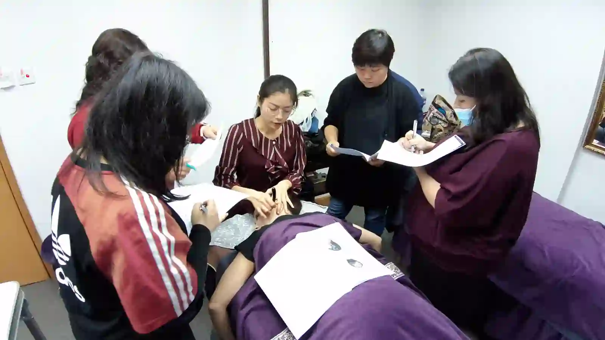
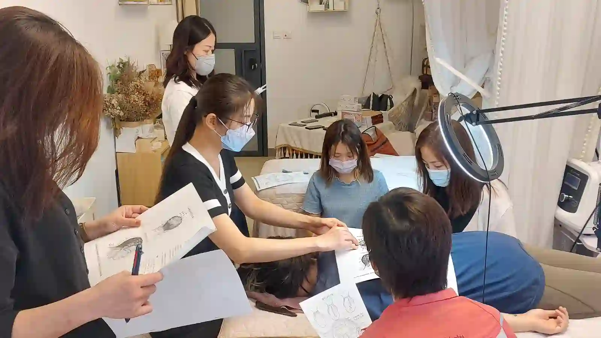
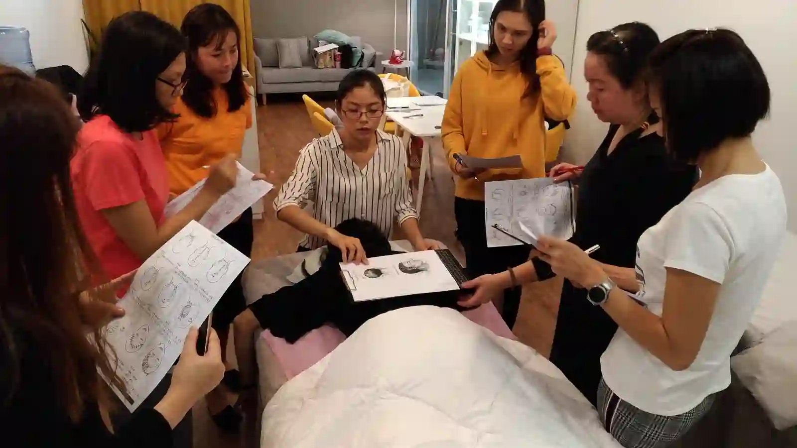

The Bojin Journal · The method
Stuffed Up? Sinus Congestion and That Heavy-Face Feeling

You know the feeling. Your cheekbones ache, your forehead feels like it's wearing a hat two sizes too small, and your whole face seems heavier than it did yesterday. A cold, allergy season, or a change in the weather, and your face carries it.
Students ask me every spring and every winter whether they should still be doing their routine when they feel like this, and whether working the face might help move some of it. Here's the honest answer, including the part where you should leave your face alone.
Why your face feels heavy when you're congested
The bones around your nose and under your eyes aren't solid. They contain air spaces, and when the lining of those spaces swells from a cold or an allergic reaction, the pressure has nowhere to go. That's the ache across the cheekbones and the band of pressure at the brow.
On top of that, congestion changes how you hold your face. You breathe through your mouth, you squint slightly, you tense your forehead against the dull pressure. By evening, the muscular tension from a day of bracing is real and separate from the congestion that started it.
What bojin can reach, and what it can't
Let me draw the line clearly, because this is where honest matters more than hopeful. Bojin is a gentle, external method that works on the skin and the soft tissue under it. It cannot drain a sinus, clear an infection, or do anything to the air spaces inside your skull. Anyone who tells you a facial tool relieves sinusitis is overselling.
What it can do is the second half of the problem: the tension you've built up around your brow, temples, and jaw from a week of holding your face against the pressure. Easing that often makes the whole face feel less heavy, even though the congestion itself hasn't changed. Many women describe it as the difference between a heavy face and a heavy face that's also clenched.
Bojin can't drain a sinus. It can ease the bracing you've built up around it, which is the difference between a heavy face and a heavy, clenched face.

The finish down the neck matters more than usual here, because that's where the gentle, temporary movement of surface fluid actually has somewhere to go.
The 5 steps for a congested, heavy face

Check yourself first.
If you have a fever, a sinus infection, or your face is tender to light touch, skip it entirely and rest. This routine is for the dull, stuffy days, not the sick ones.
Add slip and warm gently.
A little oil or cream, then slow, flat passes across the forehead and cheeks. Gentler than usual; congested skin is often more sensitive.
Ease the brow and temples.
Where a week of squinting and bracing has collected. Comfortable pressure, slower than you'd normally move.
Stay off the tender spots.
If pressing near your cheekbone or the side of your nose is painful rather than firm-but-fine, that's a signal to leave that area alone entirely today.
Finish down the neck, slowly and several times.
Longer than usual here, giving everything a downhill route.
Honest expectations, and a safety note
You'll likely feel less braced afterward and a little lighter across the forehead. You will not be less congested. Those are different things, and I'd rather you know that going in than feel let down when you still need a tissue five minutes later.
Save it for the dull, heavy, "I've been stuffed up for three days" kind of day, and keep it gentler and slower than your usual session. On the genuinely sick days, put the stick down and go back to bed.
Quick answers
Can bojin relieve sinus congestion?
No. It can't drain a sinus or clear an infection. It can ease the muscular tension you build up around the brow and jaw from bracing against the pressure.
Should I do bojin when I have a cold?
Skip it if you have a fever, an infection, or tender-to-touch facial pain. Save it for dull, stuffy days, and keep it gentler and slower than usual.
Why does my face feel heavy when I'm congested?
Swollen sinus linings create pressure with nowhere to go, and a week of squinting and tensing adds real muscular tightness on top of it.
When should I see a doctor instead?
Sinus pain that's severe, one-sided, or lasting more than about ten days, or any fever or swollen lymph nodes, belongs with a doctor rather than a facial routine.
Want the gentle version, guided?
My free 3-minute video shows the slower, softer pace worth using on a heavy, congested day.
Watch the free 3-min videoYu-Ting Lan is a Taiwan-based international bojin instructor and the founder of Héhé Studio. She has taught her bojin method to more than a thousand students, from complete beginners to grandmothers, across Taiwan, Hong Kong, and Malaysia.